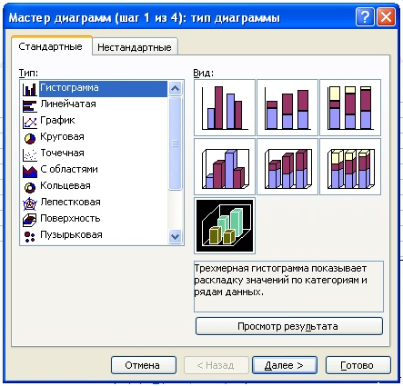
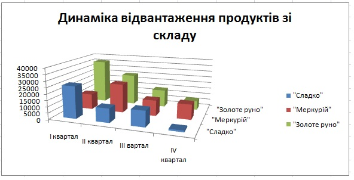
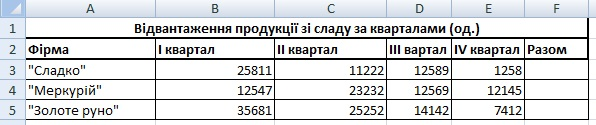
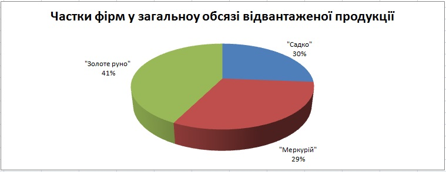

Практична робота 4.1
Подайте у графічному вигляді динаміку відвантаження зі складу продукції трьох фірм-виробників, побудувавши діаграму з таблицею на рис. 4.24. Відобразіть також частки товарів кожної фірми у загальному обсязі відвантаженої продукції.
Хід виконання
- Створіть нову книгу та збережіть її у файлі Практ_4_1.xlsx. На першому аркуші побудуйте таблицю за зразком, наведеним на рис. 4.24.
- Для того щоб порівняти динаміку відвантаження продукції зі складу, треба побудувати об’ємну гістограму за всіма чотирма кварталами для всіх трьох фірм. Таку гістограму будують тоді, коли потрібно зобразити залежність однієї величини від двох інших. За умовою завдання ми маємо кількість відвантаженої продукції, яка залежить від фірми-виробника та від номера кварталу.
- Виділіть діапазон А2:Е5.
- Запустіть майстер діаграм та оберіть тип діаграми - об’ємна гістограма (рис. 4.25).
- У другому вікні майстра діаграм задайте джерело даних – у рядках.
- Готову діаграму розмістіть на окремому аркуші (рис. 4.26).

Рис. 4.25. Вибір типу та виду діаграми
Рис. 4.26. Готова об’ємна гістограма - У клітинках діапазону F3:F5, скориставшись кнопкою , обчисліть загальну кількість продукції, відвантаженої зі складу в кожному кварталі.
- Щоб визначити, яку частку від загального обсягу відвантаженої продукції становлять товари кожної фірми, самостійно побудуйте кругову діаграму за діапазоном F3:F5 (рис. 4.27). Зверніть увагу на те, що у третьому вікні майстра діаграм ви маєте задати відображення імен категорій та часток. Збережіть створену робочу книгу.

Рис. 4.24. Таблиця з вихідними даними
Рис. 4.24. Таблиця з вихідними даними

Pис.4.27. Діаграма загальної кількості відвантажених зі складу продуктів
Pис.4.27. Діаграма загальної кількості відвантажених зі складу продуктів